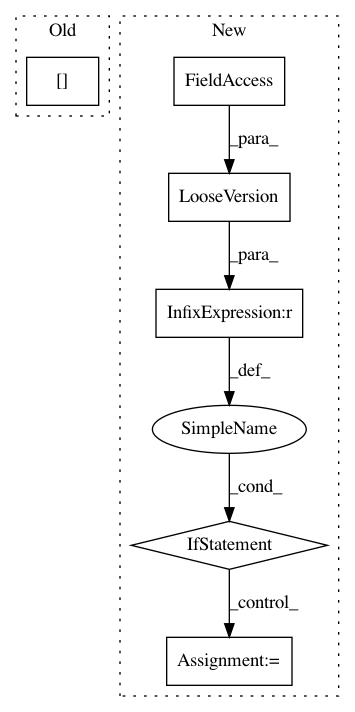

c55c07ac94dcaff834f940d8a3a4df372f354121,nilearn/plotting/img_plotting.py,,_crop_colorbar,#Any#Any#Any#,208
Before Change
cbar.ax.set_ylim(cbar.norm(cbar_vmin), cbar.norm(cbar_vmax))
outline = cbar.outline.get_xy()
outline[:2, 1] += cbar.norm(cbar_vmin)
outline[2:6, 1] -= (1. - cbar.norm(cbar_vmax))
outline[6:, 1] += cbar.norm(cbar_vmin)
cbar.outline.set_xy(outline)
cbar.set_ticks(new_tick_locs, update_ticks=True)
After Change
// matplotlib >= 3.2.0 no longer normalizes axes between 0 and 1
// See https://matplotlib.org/3.2.1/api/prev_api_changes/api_changes_3.2.0.html
if LooseVersion(matplotlib.__version__) >= LooseVersion("3.2.0"):
cbar.ax.set_ylim(cbar_vmin, cbar_vmax)
X, _ = cbar._mesh()
new_X = np.array([X[0], X[-1]])
new_Y = np.array([[cbar_vmin, cbar_vmin], [cbar_vmax, cbar_vmax]])
xy = cbar._outline(new_X, new_Y)
cbar.outline.set_xy(xy)
else:
cbar.ax.set_ylim(cbar.norm(cbar_vmin), cbar.norm(cbar_vmax))
outline = cbar.outline.get_xy()
outline[:2, 1] += cbar.norm(cbar_vmin)
outline[2:6, 1] -= (1. - cbar.norm(cbar_vmax))
outline[6:, 1] += cbar.norm(cbar_vmin)
cbar.outline.set_xy(outline)
cbar.set_ticks(new_tick_locs, update_ticks=True)
def plot_img(img, cut_coords=None, output_file=None, display_mode="ortho",
In pattern: SUPERPATTERN
Frequency: 3
Non-data size: 6
Instances
Project Name: nilearn/nilearn
Commit Name: c55c07ac94dcaff834f940d8a3a4df372f354121
Time: 2020-05-02
Author: ari.e.kahn@gmail.com
File Name: nilearn/plotting/img_plotting.py
Class Name:
Method Name: _crop_colorbar
Project Name: matplotlib/matplotlib
Commit Name: 5d0d3f538d8dcb2be23adf627da244fc09e001bf
Time: 2017-09-21
Author: tcaswell@gmail.com
File Name: lib/matplotlib/backends/wx_compat.py
Class Name:
Method Name: _AddTool
Project Name: horovod/horovod
Commit Name: 891b68d5aa48066a1aab7fc183130faf359c50c1
Time: 2019-12-05
Author: taddair@uber.com
File Name: setup.py
Class Name:
Method Name: build_torch_extension_v2